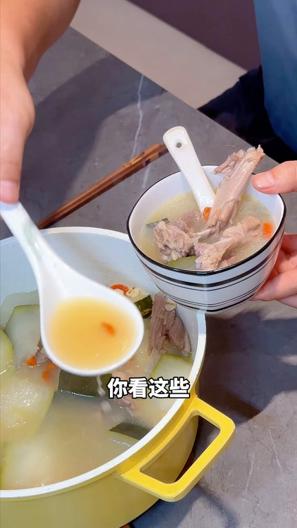
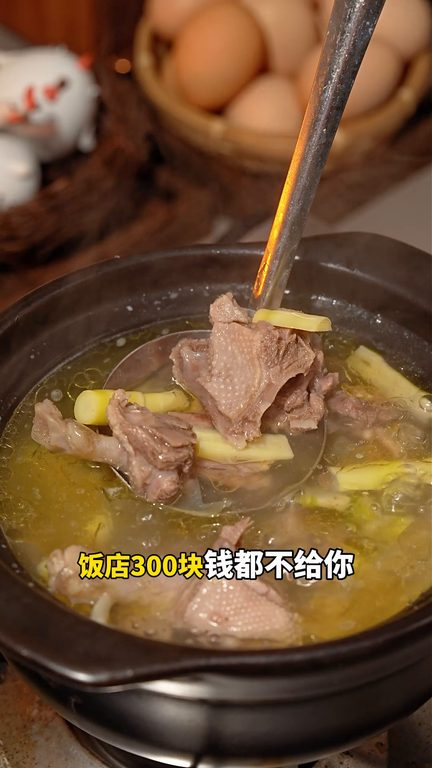
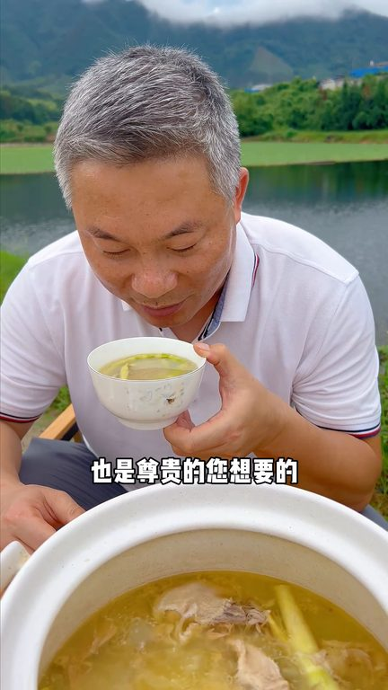

TOP 1 · 代表素材深度拆解
核心放量 稳健
视频为原始素材 HTTPS 链接；点击后加载，建议在网络环境良好时播放。
34.9万素材消耗
2.52%CTR
14.0%类目消耗占比
-0.36pp较类目均值
表现判断
该素材是类目内第 1 名，属于“核心放量”；CTR 低于类目均值。消耗体现承接规模，CTR 体现首屏与定向效率，两项应结合判断，不能仅以单指标下结论。
表达标签
口播三段式证据
开场钩子你现在不团吸水和鸭你会后悔7月8月不吃鸭9月10月环身发你看这些养生的博主现在都在讲三福天用福价老鸭汤夏天天很热灯类还足以生气福天一只鸭属性强八价
中段论证这个老鸭来煲汤我跟你说半天三百块钱都不给你然后这只拿来烘烧我跟你说骨头都不舍得用送一份三厘的切块土鸡再送一份三厘的土鸭血这一大包是多少只说这个数这是我们的生态�这是农亚�你看皮这个多厚下面好多油脂孩子从上海回来了天天吵吵吵老鸭老鸭老鸭我让阿姨给他一个礼拜多一只老鸭汤下一次红烧鸭子一丝的骨头都不舍得用待会你试过一次吃惯了我们这种山地虚水放原的生态鸭外面的鸭子你…
结尾转化吃不饱回来再吃点的时候我觉得才能尊重自然虽然淘汰率高虽然它的重复率低但是我觉得这是你想要的坚持现抓现杀的同时养足足够的天数15天也是鸭鸭500天也认为但是成本差10倍我觉得可能成本会高但是这是我想要也是中贵的你想要给孩子吃哪怕少世界吃好的男的不好如果今天介绍各种各样的吃法试试你的材质更好好吗
有效点
- 消耗占比 14.0% 说明具备投放承接能力，但 CTR 较类目均值低 0.36pp
- 口播包含明确到手机制或直播间指令，转化路径较完整
迭代动作
- 重做前 3–5 秒：结果前置、缩短背景铺垫，并把核心人群直接写进首屏字幕
- 视频时长偏长，建议剪出 30–45 秒短版，仅保留钩子、两项证据和一次 CTA
- 促销口径与资质信息保持同屏可验证，结尾只保留一个明确行动指令
合规关注

钩子建立 · 6.0s

场景/问题展开 · 45.1s
卖点证据 · 103.9s

转化收口 · 143.0s
查看完整口播摘要
你现在不团吸水和鸭你会后悔7月8月不吃鸭9月10月环身发你看这些养生的博主现在都在讲三福天用福价老鸭汤夏天天很热灯类还足以生气福天一只鸭属性强八价100块钱四只两关注给你五只你们不买我可以离去只有错买的没有错卖的我们是农场当我们联系的时候我们不夸张只是把所有的口感和用户的真是表达你们的七八月份的天夜来夜热所以每到这个时候我就会给家人熬点这种鸭汤你知道今天鸭子有多划算吗一年鸭一百块这是五百天的鸭得两百块一只我跟你说内部员工都抢诈的这是疯了这个老鸭来煲汤我跟你说半天三百块钱都不给你然后这只拿来烘烧我跟你说骨头都不舍得用送一份三厘的切块土鸡再送一份三厘的土鸭血这一大包是多少只说这个数这是我们的生态�这是农亚�你看皮这个多厚下面好多油脂孩子从上海回来了天天吵吵吵老鸭老鸭老鸭我让阿姨给他一个礼拜多一只老鸭汤下一次红烧鸭子一丝的骨头都不舍得用待会你试过一次吃惯了我们这种山地虚水放原的生态鸭外面的鸭子你鸭人看不上认识不认选这种古老的品种呢当时我们在回来做农亚的时候我们发现其实市场中有很多种鸭就是肉鸭炸的特别宽很大很大但是你会发现炖的汤没人喝那农亚就不用讲后来我们只在琢磨我们琢磨了这种小河鸭的品种其实它就是一种特别适合于在户外养山养的然后这种品种呢它长得慢吃的东西还多但是它有两个优点第一个优点体脂率特别低它身上没什么油脂红烧炖炭要好来说没有那么多油第二个优点就是卖这种品种虽然长得慢各得不大但它一个很好特点就是香就特别香所以你炖它的时候不用焯水不用料酒不用味精它就是很香是那种很清香清香原意是说被骗趴被骗趴被骗趴其实讲那么多拍那么多视频无论是想告诉大家大家经常吃的鸭还香吗现在敢用鸭子来炖汤吗今天大家吃的鸭子还放心坚持这种全良为养吃不饱回来再吃点的时候我觉得才能尊重自然虽然淘汰率高虽然它的重复率低但是我觉得这是你想要的坚持现抓现杀的同时养足足够的天数15天也是鸭鸭500天也认为但是成本差10倍我觉得可能成本会高但是这是我想要也是中贵的你想要给孩子吃哪怕少世界吃好的男的不好如果今天介绍各种各样的吃法试试你的材质更好好吗